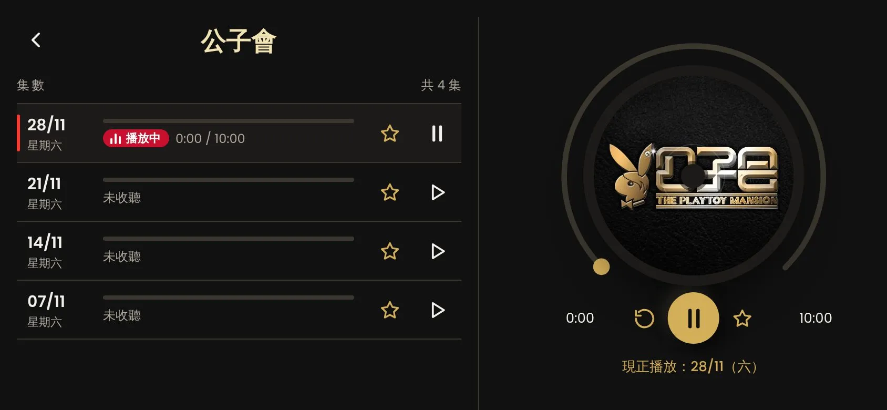
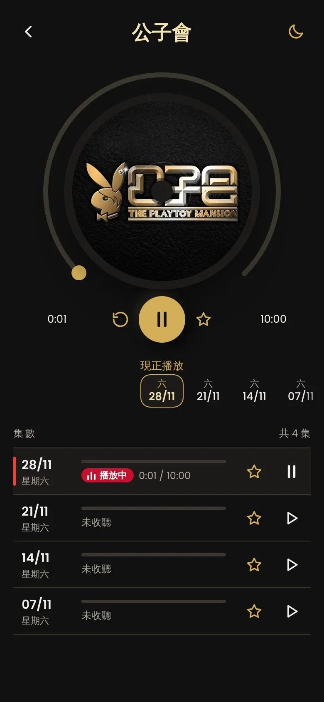
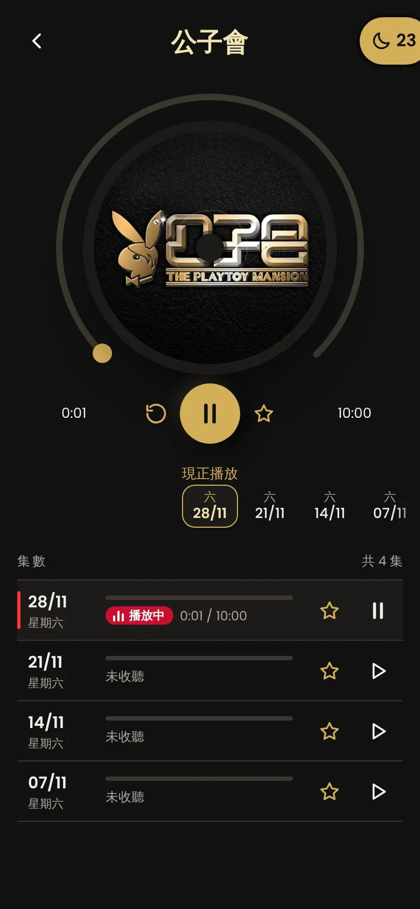
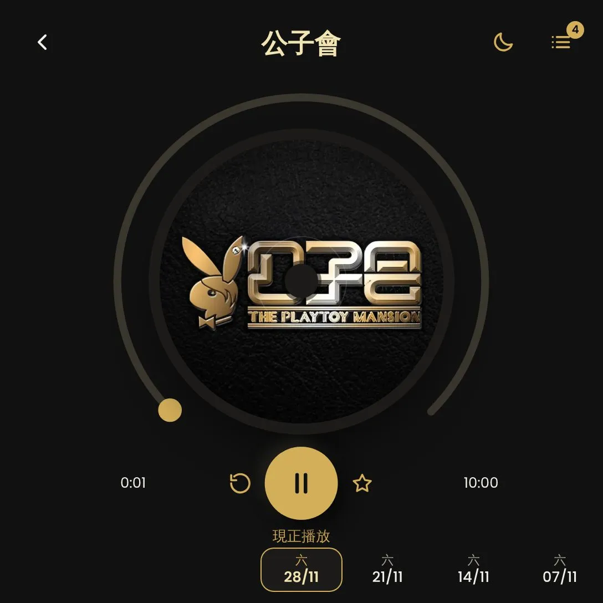
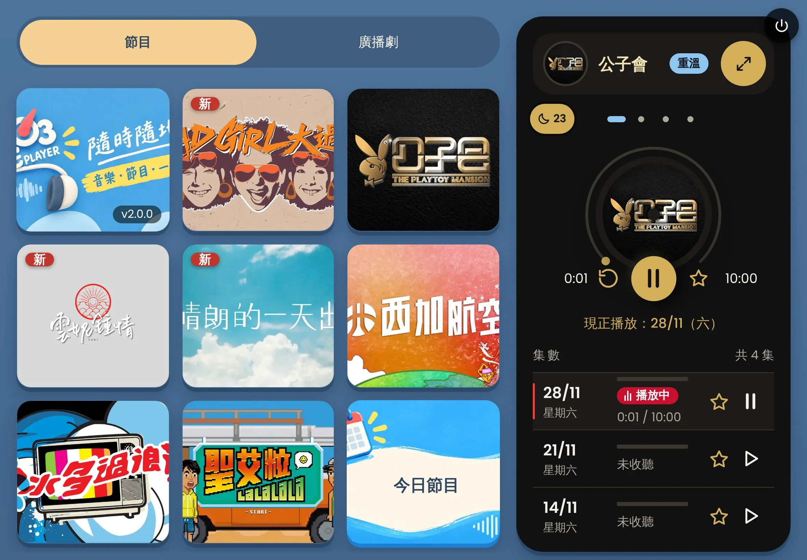
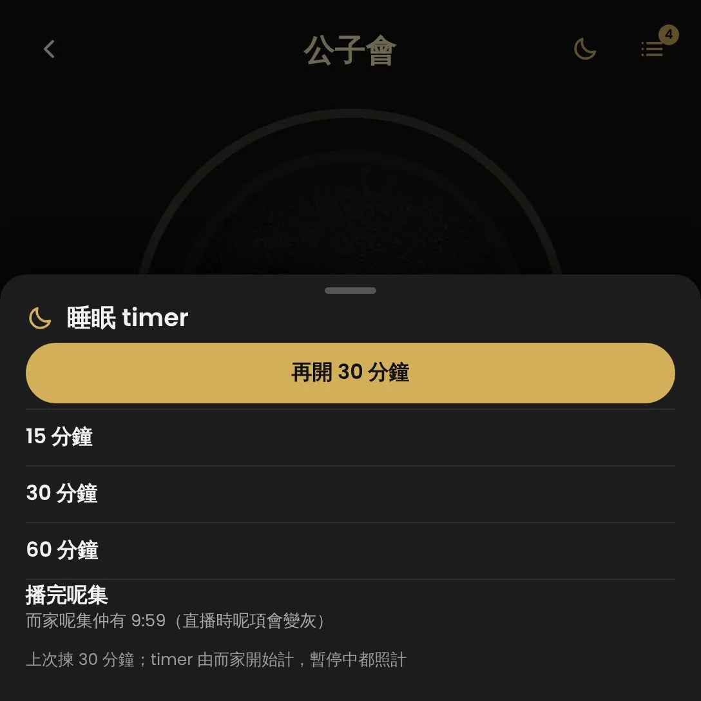
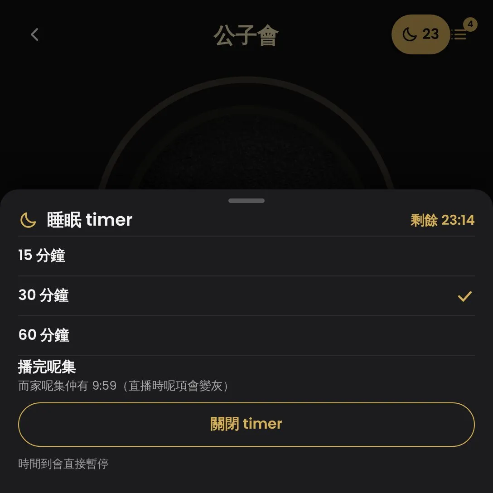

9d 睡眠 timer preview（v2：grill 之後）
真 app 截圖（v2.0.0）加上新掣。每行可以左右掃睇其他裝置。入口用方案 B；月亮掣只喺裝置本地時間 21:00–05:00 出現，timer 開緊時一直出。
日間（05:00–21:00）：零改變
冇月亮掣，同而家 v2.0.0 一模一樣；e2e:visual 新加嘅 14:00 情境要 0 diff。




夜間 21:00–05:00：月亮掣（方案 B）
內頁頁頭右上（HomeView 喺清單掣左邊）；闊版主頁播放卡喺卡頭下面嗰行左邊。未開 = 細 icon；開咗 = 實色膠囊顯示剩餘分鐘（向上取整）。






底部選單
未開：頂部「再開 30 分鐘」（上次揀嘅時長，localStorage 記住），下面 15 / 30 / 60 分鐘、播完呢集（直播變灰）；一揀即計，暫停中都照計。開緊：顯示剩餘時間、剔住而家嗰項、「關閉 timer」；揀另一項 = 由而家重新計。時間到直接暫停（唔淡出）。






Mini player
日間零改變；21:00–05:00 播放掣左邊出細月亮（撳開同一個選單）；開緊變「🌙 23」膠囊。實作時標題 / 日期會縮窄讓位（preview 係疊上去，未縮）。


已定決定（grill 結果）
| 項目 | 決定 |
|---|---|
| 入口 | 方案 B：頁頭右上 / HomeView 清單掣左邊 / 闊版播放卡卡頭下面左邊 |
| 顯示時段 | 裝置本地時間 21:00–05:00（每分鐘檢查）；開緊 timer 一直出 |
| Mini player | 21:00–05:00 有月亮入口；開緊變膠囊 |
| 選項 | 15 / 30 / 60 分鐘、播完呢集（直播灰）；唔做淡出 |
| 播完呢集 | 留喺同一集：播完（ended）先停；轉集 / 轉直播：用剩餘時間做 background timer 繼續計 |
| 時間到 | 直接暫停；記住上次時長，下次選單頂出「再開 N 分鐘」；唔自動重開 |
| 暫停 / 轉節目 | 照計；一揀即計 |
| 準確度 | 絕對截止時間 + timeupdate 檢查；sessionStorage，重新載入照計；過咗期就清走唔播 |
| e2e:visual | lane 0 先加 14:00 日間情境；日間 0 diff；22:30 只准月亮掣 pixel diff + mini player 標題 / 日期位置 diff |